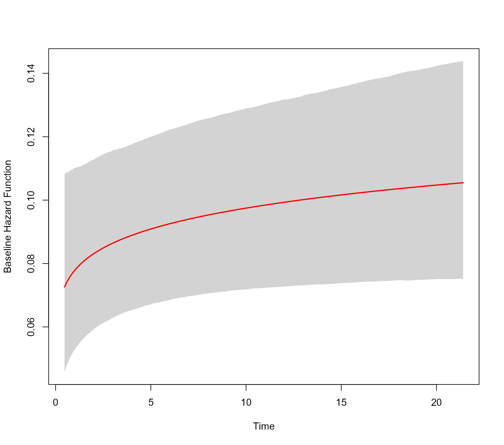

Baseline Hazard Function
Dimitris Rizopoulos
2025-08-22
Source:vignettes/Baseline_Hazard.Rmd
Baseline_Hazard.RmdBaseline Hazard Function
Penalized B-splines
The submodel for the event process in the joint models fitted in JMbayes2 is a relative hazard model postulating a multiplicative effect of the covariates in the hazard scale. The default specification of the baseline hazard function h_0(t) takes the form: \log \{ h_0(t) \} = \sum \limits_{p = 1}^P \gamma_p B_p(t, \lambda), where B_p(t, \lambda) denotes the p-th basis function of a B-spline with knots \lambda_1, \ldots, \lambda_P and \gamma the vector of spline coefficients. To ensure smoothness of the baseline hazard function, we postulate a ‘penalized’ prior distribution for the spline coefficients \gamma:
p(\gamma \mid \tau) \propto \tau^{\rho(K)/2}\exp \left (-\frac{\tau}{2} \gamma^\top K \gamma \right ),
where \tau is the smoothing
parameter that takes a \mathrm{Gamma}(5,
0.5) hyper-prior to ensure a proper posterior, K = \Delta_r^\top \Delta_r, where \Delta_r denotes r-th difference penalty matrix, and \rho(K) denotes the rank of K. Different baseline hazard functions can be
specified using the base_hazard and control
arguments of jm(). We will illustrate this capability using
the AIDS dataset. We start with the default joint model for the time to
death and the longitudinal measurements of the square root transformed
CD4 cell counts:
# Cox regression
CoxFit <- coxph(Surv(Time, death) ~ drug, data = aids.id)
# a linear mixed model for sqrt(CD4) cell count
fm <- lme(CD4 ~ ns(obstime, 2) * drug, data = aids,
random = list(patient = pdDiag(~ ns(obstime, 2))))
# default baseline hazard
jointFit1 <- jm(CoxFit, fm, time_var = "obstime")By default, the knots \lambda_1, \ldots,
\lambda_P are placed equidistantly in the interval (10^{-8}, T_{max}), where T_{max} is the maximum follow-up time. The
number of knots is specified by the control argument
base_hazard_segments, which has a default value of 9. The
degree of the polynomials in the B-spline basis is specified by the
control argument Bsplines_degree; the default is 2, i.e.,
quadratic polynomials. The value of r
in the penalty matrix \Delta_r is
specified by the control argument diff; by default,
second-order differences are used. The internal function
JMbayes2:::plot_hazard() can be used to depict the
estimated baseline hazard function:
JMbayes2:::plot_hazard(jointFit1)
The default specification assumes a B-spline approximation for the
time variable in its original scale. However, as argued in the flexsurv
package, this specification may have the undesirable property that
the cumulative hazard function does not approach zero at time zero.
Additionally, the default approximation of the baseline hazard is based
on a B-spline basis with quadratic piecewise polynomial functions. We
override both of these settings by specifying a natural cubic spline
(also known as restricted cubic spline) basis for the logarithm of time
using the base_hazard argument:
jointFit2 <- update(jointFit1, base_hazard = "log time, ns")
JMbayes2:::plot_hazard(jointFit2)
Setting base_hazard = "log time, ns" corresponds to
setting the control arguments timescale_base_hazard = "log"
and basis = "ns". Using regular expressions look-up of the
user input in the base_hazard argument, the
jm() function attempts to set the corresponding control
arguments. For example, the following call would also set natural cubic
splines with the log time:
update(jointFit1, base_hazard = "ns, log-time").
Piecewise Constant
To fit a piecewise-constant baseline hazard function by splitting the follow-up period into five equidistant intervals, we use the call (note that the piecewise-constant approximation is defined for time in its original scale again):
jointFit3 <- update(jointFit1, base_hazard = "piecewise constant",
base_hazard_segments = 5L)
JMbayes2:::plot_hazard(jointFit3)
Piecewise Linear
A piecewise-linear baseline hazard function for the log time variable with three interconnected lines is fitted using the syntax:
jointFit4 <- update(jointFit1, base_hazard = "piecewise linear, log time",
base_hazard_segments = 3L,
priors = list(penalized_bs_gammas = FALSE))
JMbayes2:::plot_hazard(jointFit4)
Via the priors argument, we specified that the \gamma coefficients for the piecewise-linear
baseline hazard should not be penalized. In this case, they have a
normal prior with a mean zero and variance 10.
Weibull
The Weibull baseline hazard function in the log scale corresponds to a simple linear model with an intercept and a slope term for the logarithm of the time variable. Hence, it is a special case of the models we considered above. We can fit a joint model with the Weibull baseline hazard using the call:
jointFit5 <- update(jointFit1, base_hazard = "weibull")
JMbayes2:::plot_hazard(jointFit5)
This baseline hazard function also allows extrapolating beyond the range of observed event times. Actually, extrapolation is possible whenever a natural cubic spline basis is used. In the following figure, we extrapolate until month 24:
JMbayes2:::plot_hazard(jointFit5, tmax = 24)
Stratified Models
In case of stratified models, a different baseline hazard is fitted
per stratum. The base_hazard argument can in this case be a
character vector with each element specifying the baseline hazard per
stratum. As an example, we refit the Cox model by stratifying for drug.
Via the base_hazard we specify that for the ddC group the
baseline hazard is Weibull, and for the ddI group a penalized natural
cubic spline for the logarithm of the time variable:
# Cox regression
CoxFit2 <- coxph(Surv(Time, death) ~ strata(drug), data = aids.id)
# default baseline hazard
jointFit6 <- jm(CoxFit2, fm, time_var = "obstime",
base_hazard = c("weibull", "log time, ns"))
JMbayes2:::plot_hazard(jointFit6)Specifying an NA element in base_hazard
will imply that the default baseline hazard function will be used for
this stratum.